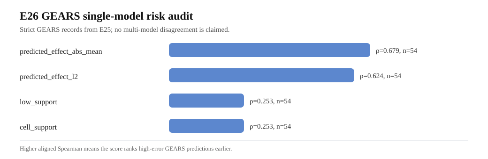

E26 GEARS single-model risk audit
基于 E25 strict GEARS 包，评估单模型可用风险线索。这里不声称多模型 disagreement。
54
Records
3
Datasets
4
Deployable scores
0
Strict issues
核心观察：GEARS predicted-effect magnitude 与真实误差呈正相关；true magnitude 更强但只可诊断，不可部署。
GEARS native uncertainty 在 E25 formal records 中不可用；scGPT/CPA 仍需 adapter。

Overall score summary
| level | dataset_family | dataset_name | score_name | score_type | n | spearman_score_vs_rmse | direction_aligned_spearman | mean_rmse | aurc | oracle_aurc | random_aurc | excess_aurc | risk_cov_improve_pct |
|---|---|---|---|---|---|---|---|---|---|---|---|---|---|
| overall | ALL | ALL | true_effect_abs_mean_diagnostic | risk | 54 | 0.767342 | 0.767342 | 0.071013 | 0.042339 | 0.036954 | 0.071013 | 0.005385 | 36.010707 |
| overall | ALL | ALL | true_effect_l2_diagnostic | risk | 54 | 0.755295 | 0.755295 | 0.071013 | 0.042439 | 0.036954 | 0.071013 | 0.005485 | 36.305156 |
| overall | ALL | ALL | gears_predicted_effect_abs_mean_risk | risk | 54 | 0.679207 | 0.679207 | 0.071013 | 0.042601 | 0.036954 | 0.071013 | 0.005646 | 34.198771 |
| overall | ALL | ALL | gears_predicted_effect_l2_risk | risk | 54 | 0.623937 | 0.623937 | 0.071013 | 0.043676 | 0.036954 | 0.071013 | 0.006722 | 33.360677 |
| overall | ALL | ALL | gears_low_support_risk | risk | 54 | 0.253194 | 0.253194 | 0.071013 | 0.120604 | 0.036954 | 0.071013 | 0.083649 | -2.891299 |
| overall | ALL | ALL | gears_cell_support_confidence | confidence | 54 | -0.253194 | 0.253194 | 0.071013 | 0.120604 | 0.036954 | 0.071013 | 0.083649 | -2.611102 |
Top-20% high-error enrichment
| scope | score_name | score_type | n | top_fraction | k | high_error_threshold_p80 | base_high_error_rate | picked_high_error_rate | enrichment |
|---|---|---|---|---|---|---|---|---|---|
| overall | gears_cell_support_confidence | confidence | 54 | 0.2 | 11 | 0.069705 | 0.203704 | 0.454545 | 2.231405 |
| overall | gears_low_support_risk | risk | 54 | 0.2 | 11 | 0.069705 | 0.203704 | 0.454545 | 2.231405 |
| overall | gears_predicted_effect_abs_mean_risk | risk | 54 | 0.2 | 11 | 0.069705 | 0.203704 | 0.636364 | 3.123967 |
| overall | gears_predicted_effect_l2_risk | risk | 54 | 0.2 | 11 | 0.069705 | 0.203704 | 0.636364 | 3.123967 |
Partial Spearman controlling true magnitude
| scope | score_name | n | partial_spearman_control_true_l2 | partial_spearman_control_true_abs_mean |
|---|---|---|---|---|
| overall | gears_cell_support_confidence | 54 | -0.254599 | -0.177815 |
| overall | gears_low_support_risk | 54 | 0.254599 | 0.177815 |
| overall | gears_predicted_effect_abs_mean_risk | 54 | 0.589480 | 0.528416 |
| overall | gears_predicted_effect_l2_risk | 54 | 0.545264 | 0.499447 |
| overall | true_effect_abs_mean_diagnostic | 54 | 0.312625 | -0.113638 |
| overall | true_effect_l2_diagnostic | 54 | 0.061739 | 0.065346 |
Risk-coverage sample
| dataset_family | dataset_name | score_name | score_type | coverage | mean_rmse | full_mean_rmse | risk_cov_improve_pct |
|---|---|---|---|---|---|---|---|
| gears_crispr_group | adamson | gears_cell_support_confidence | confidence | 1.0 | 0.042086 | 0.042086 | 0.000000 |
| gears_crispr_group | adamson | gears_cell_support_confidence | confidence | 0.9 | 0.041145 | 0.042086 | 2.235692 |
| gears_crispr_group | adamson | gears_cell_support_confidence | confidence | 0.8 | 0.041209 | 0.042086 | 2.083672 |
| gears_crispr_group | adamson | gears_cell_support_confidence | confidence | 0.7 | 0.038542 | 0.042086 | 8.420381 |
| gears_crispr_group | adamson | gears_cell_support_confidence | confidence | 0.6 | 0.032575 | 0.042086 | 22.597560 |
| gears_crispr_group | adamson | gears_cell_support_confidence | confidence | 0.5 | 0.032853 | 0.042086 | 21.936861 |
| gears_crispr_group | adamson | gears_low_support_risk | risk | 1.0 | 0.042086 | 0.042086 | 0.000000 |
| gears_crispr_group | adamson | gears_low_support_risk | risk | 0.9 | 0.041145 | 0.042086 | 2.235692 |
| gears_crispr_group | adamson | gears_low_support_risk | risk | 0.8 | 0.041209 | 0.042086 | 2.083672 |
| gears_crispr_group | adamson | gears_low_support_risk | risk | 0.7 | 0.038542 | 0.042086 | 8.420381 |
| gears_crispr_group | adamson | gears_low_support_risk | risk | 0.6 | 0.032575 | 0.042086 | 22.597560 |
| gears_crispr_group | adamson | gears_low_support_risk | risk | 0.5 | 0.032853 | 0.042086 | 21.936861 |
| gears_crispr_group | adamson | gears_predicted_effect_abs_mean_risk | risk | 1.0 | 0.042086 | 0.042086 | 0.000000 |
| gears_crispr_group | adamson | gears_predicted_effect_abs_mean_risk | risk | 0.9 | 0.041932 | 0.042086 | 0.364985 |
| gears_crispr_group | adamson | gears_predicted_effect_abs_mean_risk | risk | 0.8 | 0.041744 | 0.042086 | 0.812960 |
| gears_crispr_group | adamson | gears_predicted_effect_abs_mean_risk | risk | 0.7 | 0.040506 | 0.042086 | 3.753231 |
| gears_crispr_group | adamson | gears_predicted_effect_abs_mean_risk | risk | 0.6 | 0.040308 | 0.042086 | 4.223922 |
| gears_crispr_group | adamson | gears_predicted_effect_abs_mean_risk | risk | 0.5 | 0.038556 | 0.042086 | 8.386538 |
| gears_crispr_group | adamson | gears_predicted_effect_l2_risk | risk | 1.0 | 0.042086 | 0.042086 | 0.000000 |
| gears_crispr_group | adamson | gears_predicted_effect_l2_risk | risk | 0.9 | 0.041932 | 0.042086 | 0.364985 |
| gears_crispr_group | adamson | gears_predicted_effect_l2_risk | risk | 0.8 | 0.041744 | 0.042086 | 0.812960 |
| gears_crispr_group | adamson | gears_predicted_effect_l2_risk | risk | 0.7 | 0.041831 | 0.042086 | 0.605628 |
| gears_crispr_group | adamson | gears_predicted_effect_l2_risk | risk | 0.6 | 0.041837 | 0.042086 | 0.592072 |
| gears_crispr_group | adamson | gears_predicted_effect_l2_risk | risk | 0.5 | 0.040570 | 0.042086 | 3.600515 |
| gears_crispr_group | adamson | true_effect_abs_mean_diagnostic | risk | 1.0 | 0.042086 | 0.042086 | 0.000000 |
| gears_crispr_group | adamson | true_effect_abs_mean_diagnostic | risk | 0.9 | 0.036777 | 0.042086 | 12.613141 |
| gears_crispr_group | adamson | true_effect_abs_mean_diagnostic | risk | 0.8 | 0.034287 | 0.042086 | 18.531690 |
| gears_crispr_group | adamson | true_effect_abs_mean_diagnostic | risk | 0.7 | 0.032617 | 0.042086 | 22.499386 |
| gears_crispr_group | adamson | true_effect_abs_mean_diagnostic | risk | 0.6 | 0.030674 | 0.042086 | 27.116178 |
| gears_crispr_group | adamson | true_effect_abs_mean_diagnostic | risk | 0.5 | 0.029646 | 0.042086 | 29.559133 |
| gears_crispr_group | adamson | true_effect_l2_diagnostic | risk | 1.0 | 0.042086 | 0.042086 | 0.000000 |
| gears_crispr_group | adamson | true_effect_l2_diagnostic | risk | 0.9 | 0.036777 | 0.042086 | 12.613141 |
| gears_crispr_group | adamson | true_effect_l2_diagnostic | risk | 0.8 | 0.034739 | 0.042086 | 17.457009 |
| gears_crispr_group | adamson | true_effect_l2_diagnostic | risk | 0.7 | 0.032617 | 0.042086 | 22.499386 |
| gears_crispr_group | adamson | true_effect_l2_diagnostic | risk | 0.6 | 0.030674 | 0.042086 | 27.116178 |
| gears_crispr_group | adamson | true_effect_l2_diagnostic | risk | 0.5 | 0.029689 | 0.042086 | 29.456597 |
| gears_crispr_group | dixit | gears_cell_support_confidence | confidence | 1.0 | 0.424841 | 0.424841 | 0.000000 |
| gears_crispr_group | dixit | gears_cell_support_confidence | confidence | 0.9 | 0.424841 | 0.424841 | 0.000000 |
| gears_crispr_group | dixit | gears_cell_support_confidence | confidence | 0.8 | 0.424841 | 0.424841 | 0.000000 |
| gears_crispr_group | dixit | gears_cell_support_confidence | confidence | 0.7 | 0.424841 | 0.424841 | 0.000000 |